UMass Amherst: Campus Engagement & Digital Storytelling
- Student Social Media Content Creator
I developed and executed social-first content strategies for the University of Massachusetts Amherst, focusing on high-impact video to drive student engagement and brand awareness.
Key Achievements
- Cross-Platform Strategy: Produced and optimized original content for Instagram Reels, YouTube Shorts, and LinkedIn, tailoring brand messaging for a diverse academic community.
- Engagement Growth: Leveraged data-informed insights to increase impressions and cross-platform engagement, ensuring content aligned with the university's mission and recruitment goals.
- Multimedia Production: Managed the end-to-end creative process—scripting, capturing, and editing—for large-scale campus events and student-life features.
- Project Facilitation: Refined professional workflows in content scheduling and project management to maintain a consistent, high-quality digital presence.
Videos
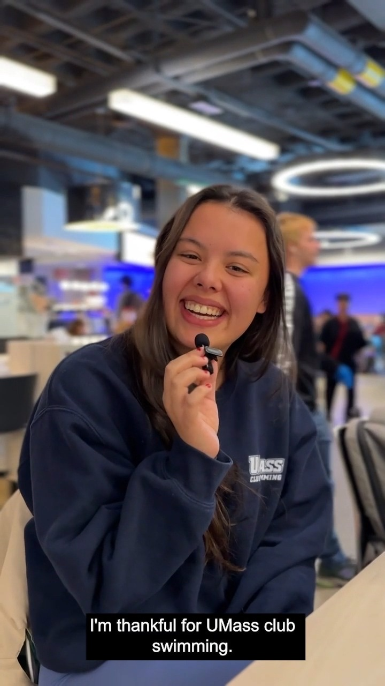
Facebook · UMass AmherstWe asked #UMassAmherst students what they are thankful for! 🦃 Add your answer in the comments! ⬇️ #UMassAmherst…From concept to post: I brainstormed, filmed, edited and published this campus video.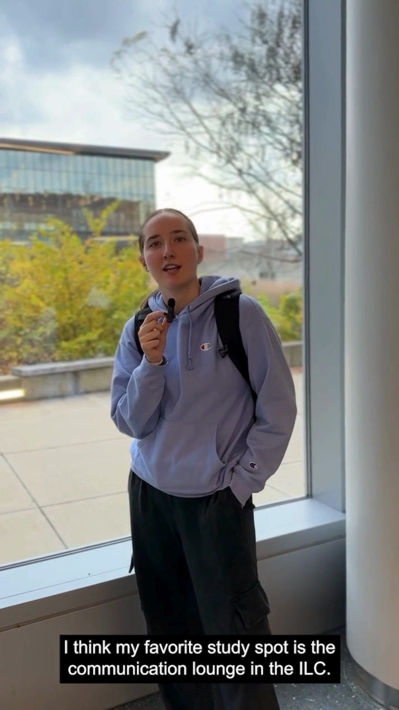
Facebook · UMass AmherstFinals Week is here! 📚 Where do #UMassAmherst students like to study?Add your favorite study spot in the comments!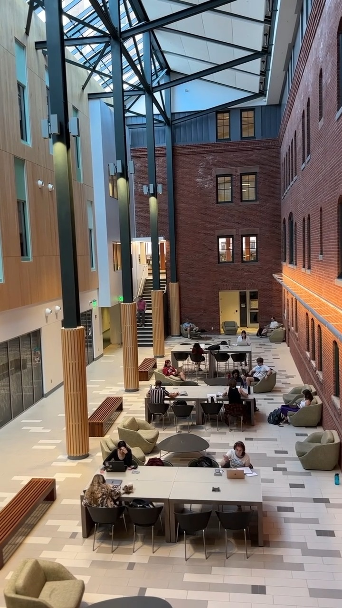
Facebook · UMass AmherstLooking for a cozy and quiet spot as Finals Week approaches? Here is our next hidden gem! Check out the South…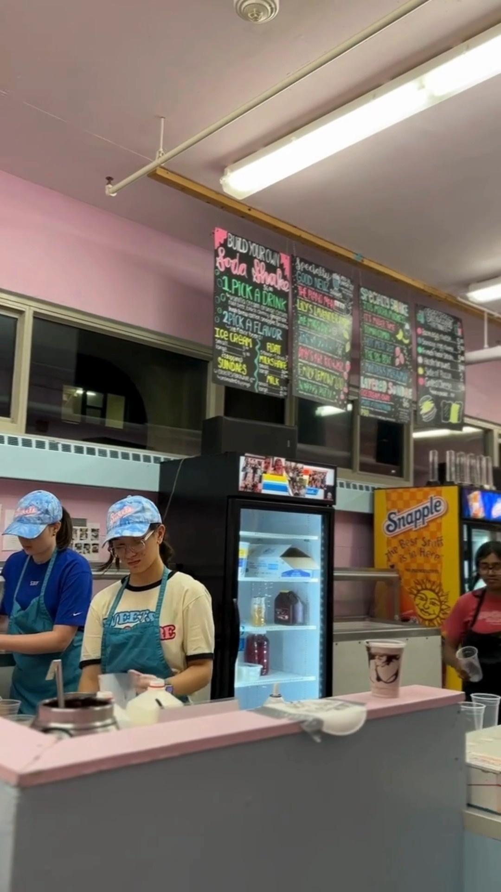
Facebook · UMass AmherstStudy break 🤝 sweet treat Whether you need to take a little break from studying or want to celebrate finishing…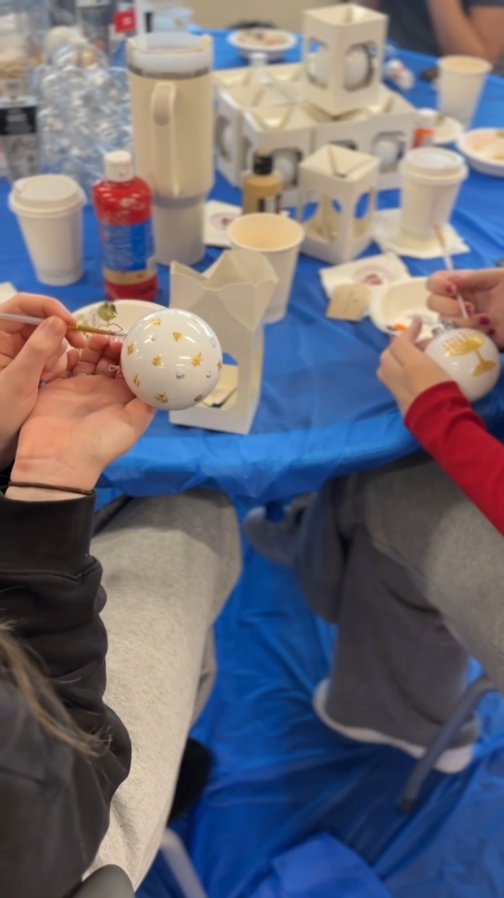
Facebook · UMass AmherstBaking spirits bright! 🍪 Students came out last week to join Team Positive Presence (TPP) for an…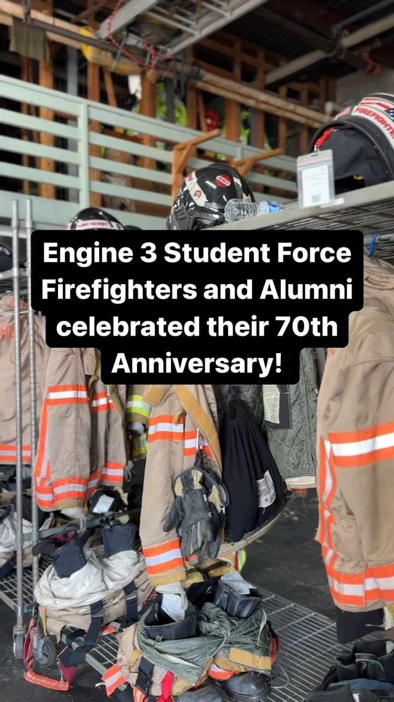
Facebook · UMass AmherstThe Engine 3 Student Force Firefighters are celebrating its 70th Anniversary and, with that, a special…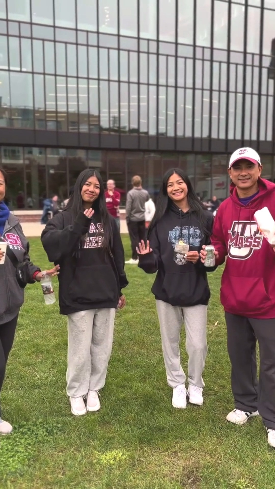
Facebook · UMass AmherstThank you to all the families who joined us for Family Weekend 2023! The event-packed weekend, set against the…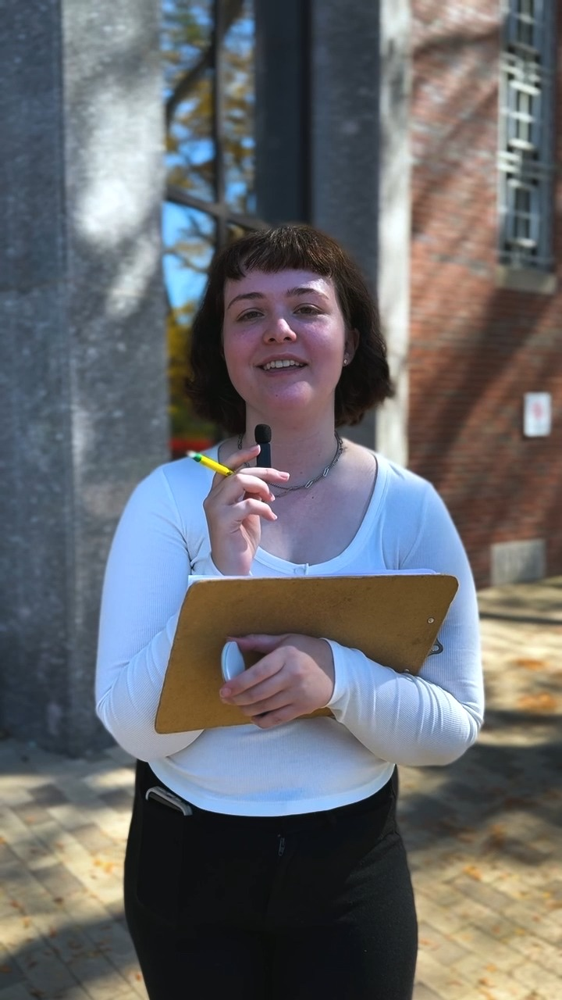
Facebook · UMass AmherstLearning something new every day! 🧠 📚 We asked #UMassAmherst students to tell us their favorite class so far…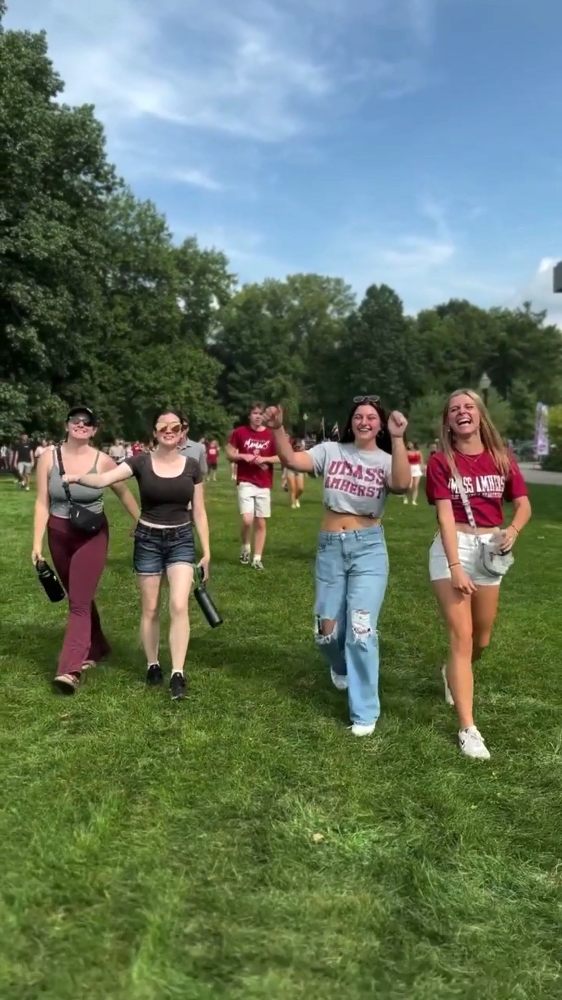
Facebook · UMass AmherstYou came out for the UMass Football home opener to show off your #Flagship pride...now it's time to do it again!…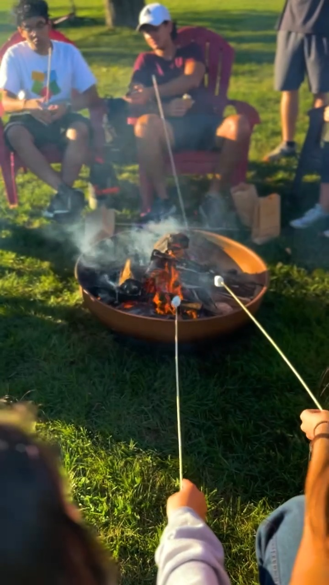
Facebook · UMass AmherstYou know what they say about good company - the s’more, the merrier! This past Thursday, students were invited…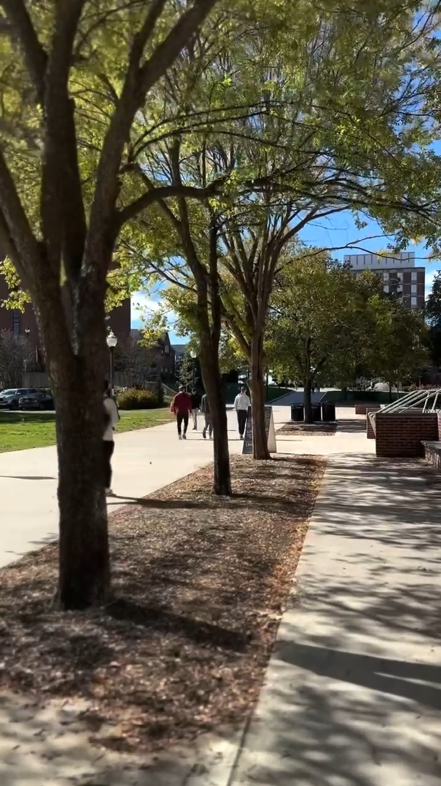
Facebook · UMass AmherstStroll the #UMassAmherst campus with us and watch the leaves change 🍁 🍂 #FallFoliage #SceneAtUMass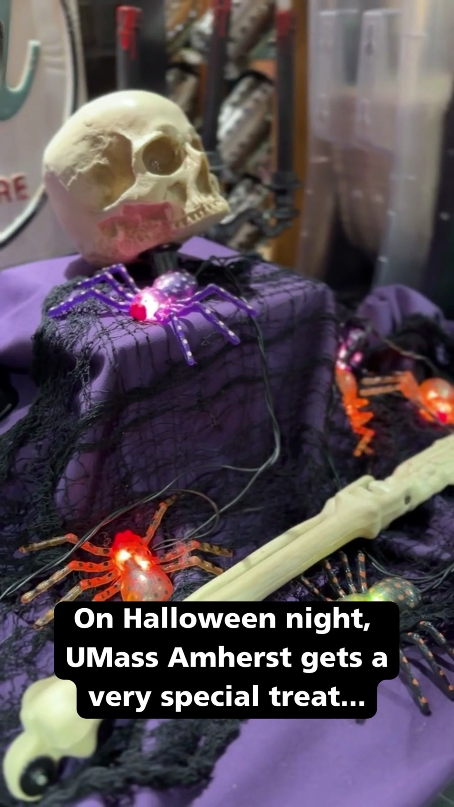
Facebook · UMass AmherstA special night calls for a special meal! 🍽️ Keeping tradition alive (or undead 🧟), UMass Dining hosted their…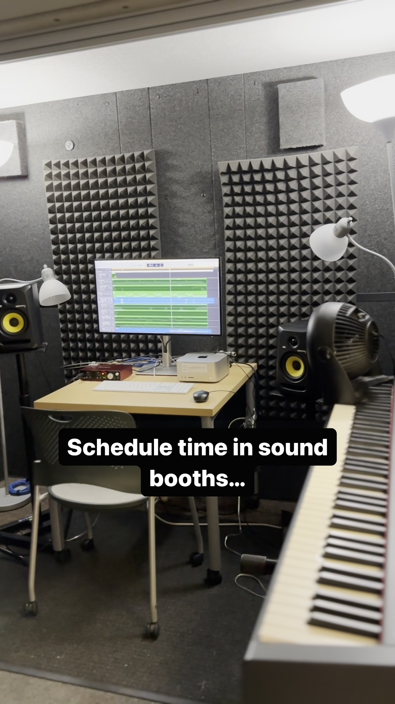
Facebook · UMass AmherstDo you have a media project coming up? Come check out our next hidden gem - the UMass Digital Media Lab! So,…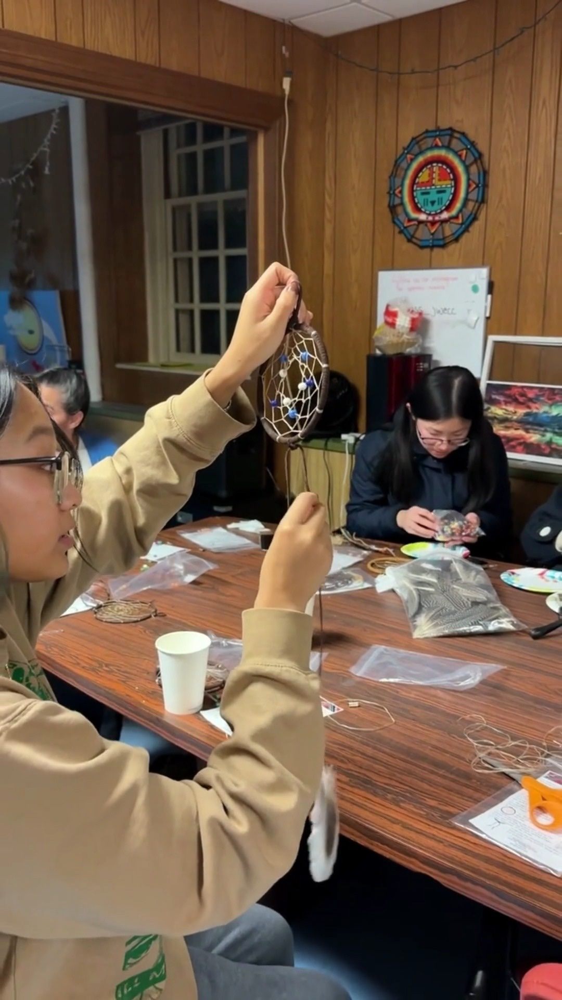
Facebook · UMass AmherstAs part of celebrations for Native American Heritage Month, the #UMass community was invited to come out for…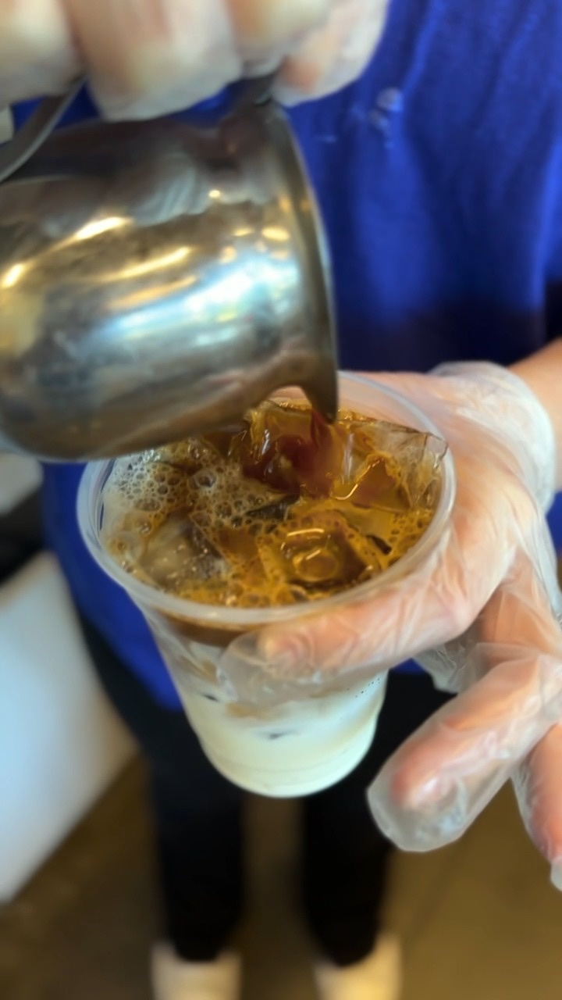
Facebook · UMass AmherstHappy First Day of Autumn! 🍁 If you're in the mood to celebrate the season, be sure to stop by one of the many…